Selected work
What I’ve been part of.
My own roles and projects, and the projects I’ve managed for other teams, newest first. Open any of mine for the full study.
- Presidencies
- 2
- Projects managed for teams
- 13
- NIBSU events
- 60+
- X followers grown for Playverse
- 130K
Now
 Leadership
Leadership
Aug 2026 – now
Student Council President · built the class website
I plan school events, lead committees including royalty and social media, and help staff when needed. Separately, I designed, built, and maintain the Class of 2027 website: events and RSVPs, announcements, a photo gallery, senior spotlights, and an admin dashboard for contributors.
- President
- 1,101 visits · first month
- 72,835 Instagram views
 Business
Business
Early 2024 – now
Founder · project management, marketing & hiring agency
A service business for Roblox project teams: organising delivery, supporting marketing, and finding people for the roles a project needs. I work with my leadership team on client projects, game audiences, and community activity, and I built the agency’s identity, website, operations dashboard, and bot tools.
- Founder
- Identity · site · dashboard · bot
- Playverse is a client
 Business
Business
Sep 2023 – now
Project manager · AVNT client
Playverse develops and publishes games on Roblox, including RoTube Life 2 and Super League Soccer, now FIFA Super Soccer. I joined its team in September 2023, and the studio later became an AVNT client. Through AVNT I work with its team on project coordination, brand and social channels, and partnerships, about twelve hours a week. My social-media work included growing the studio’s X account to 130,000 followers.
- ~12 hrs / week
- 130K X followers · milestone
- AVNT client
 Technology
Technology
Early 2026 – now
App design and development
A private web app for messaging, files, notes, and personal tools for a small circle, with an iOS wrapper. Built under the working name Royal Vault. I work on the interface, the server, real-time messaging over Socket.IO, media handling including voice-message conversion, and the Capacitor shell that brings it to a phone.
- Web + iOS
- Node.js · Socket.IO · PostgreSQL
NIBSUCommunity
2024 – now
President
An independent organisation bringing together Black students from four Lake County school districts. As president I help plan and run kickoffs, bowling outings, restaurant gatherings, and meetings. A state representative and a senator have attended our events.
2026
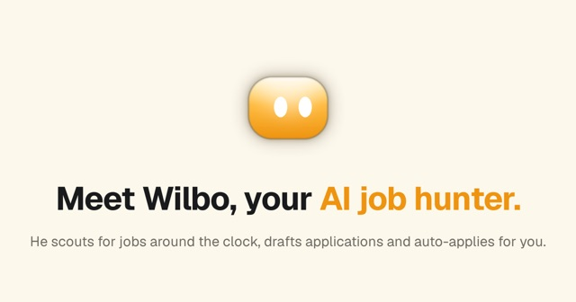
Tool
Jul 2026
Wilbo.ai
Meet Wilbo, your AI job hunter.
Project manager
Wilbo scouts for jobs around the clock, drafts applications, and applies automatically. Growth runs on short-form creator content.
I ran the team day to day, worked with the founder on what to build and in what order, and staffed the roles the product needed. I set up the creator-led marketing that drives sign-ups and managed the launch and the updates after it.
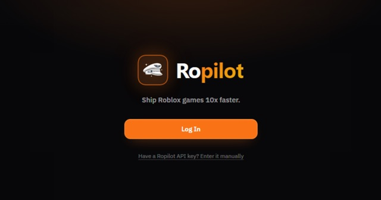
Tool
Jun 2026
Ropilot.ai · UGC marketing push
Short-form UGC content engine on TikTok
Project manager
A TikTok content engine of “made with prompts” build videos for Ropilot, with clips ranging from 10K to 851K+ views. Creator content drives distribution.
I built and ran the creator operation: recruiting and briefing creators, deciding which build videos to make, managing the posting schedule, and reading the results to decide what to make next.
- Clips 10K – 851K+ views
- @ropilot__ai on TikTok
Tool
May 2026
Pinevex Renderer
Open-source UI renderer for Roblox-style interface trees
Project manager
The open-sourced renderer half of Pinevex: a CPU-only renderer that turns a Roblox-style UI tree into near pixel-perfect previews, with a live web demo that accepts Pinevex JSON or a binary ScreenGui file.
I decided the scope of the open-source release with the team, ran testing on the renderer and the web demo, and managed the launch, from the announcement to the developer community around it.
Game
Apr 2026
New Roblox game
In development
Project manager
A new title in a high-grossing Roblox genre spotted through the studio’s own platform intelligence, with about $20K allocated to enter it.
I set the production plan with the founder, staffed the build team, and run it day to day: milestones, playtests, and clearing blockers as development continues.
- $20K allocated
- In development
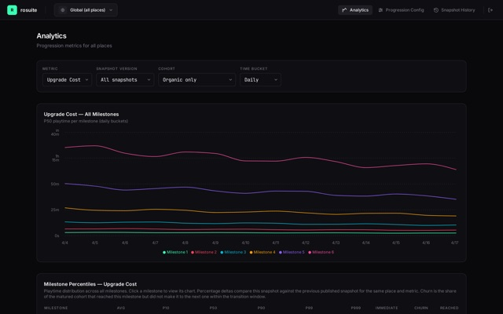
Infra
Apr 2026
Rosuite
Proprietary Roblox live-ops platform
Project manager
One operator console for live-ops across every title the studio ships: progression analytics, an AI-assisted optimisation loop for retention and monetisation, a config pipeline that pushes changes live without a rebuild, and a review workflow for user-generated content.
I gathered what each live title needed from the console, decided the feature priorities with the team, ran testing against real live-ops workflows, and managed the rollout across the studio’s titles.
- Multi-title live-ops
- AI metric optimisation
- Cloudflare Workers + D1
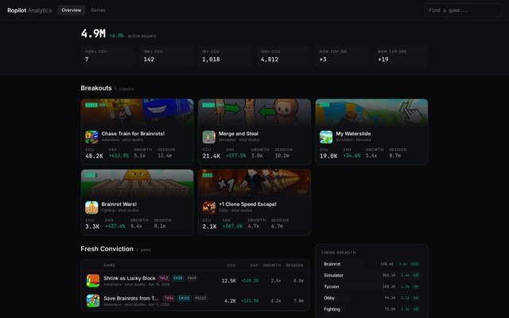
Tool
Apr 2026
Ropilot Analytics
Market-intelligence engine for the Roblox ecosystem
Project manager
An hourly ingestion pipeline sweeping 38K+ universes into a time-series warehouse: rank, concurrent players, visits, favourites, and more per snapshot, surfaced at analytics.ropilot.ai.
I shaped what the analytics surface needed to show for operators, ran the team through the build, tested each stage of the pipeline, and managed the launch to developers.
- 38K+ universes tracked
- Hourly ingest + 15-min deltas
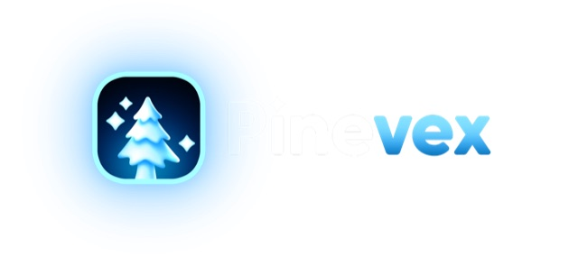
Model
Mar 2026
Pinevex
UI reconstructor model + UI engine
Project manager
A reconstructor model trained from scratch that takes a screenshot and returns structured Roblox UI elements, paired with a custom UI engine that turns the output into something shippable.
I coordinated the model work and the UI-engine work as one product, staffed the testing with studio developers, and managed the release and the follow-up based on their feedback.
- Screenshot → structured UI
- Trained on H100s
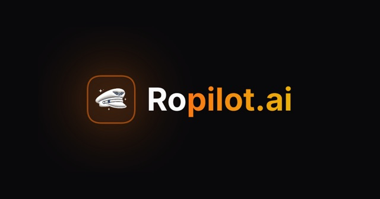
Tool
Feb 2026
Ropilot.ai
AI-powered Roblox development
Project manager
The first AI developer tool for Roblox: code generation with full codebase context and automated playtests. Reached 10,000 professional developer workflows in the first two weeks; now 50,000+ users.
I ran the team through the launch, made product calls with the founder on what shipped first, led testing with developers, and managed marketing and community during the first weeks of growth.
- 50K+ users
- 10K workflows in 2 weeks
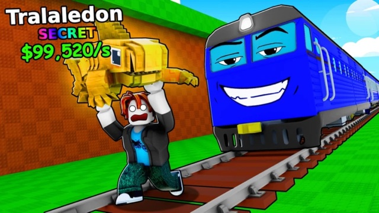
Game
Jan 2026
Chase Train for Brainrots!
Concept to launch in four hours
Project manager
A trend-driven game taken from concept to launch in four hours by a team of two. It hit a $100K USD valuation shortly after release.
I led the two-person team through the four-hour build, kept scope to what could ship that day, tested it, and ran the launch and the live updates that followed.
- 4 hours to ship
- $100K valuation
2025
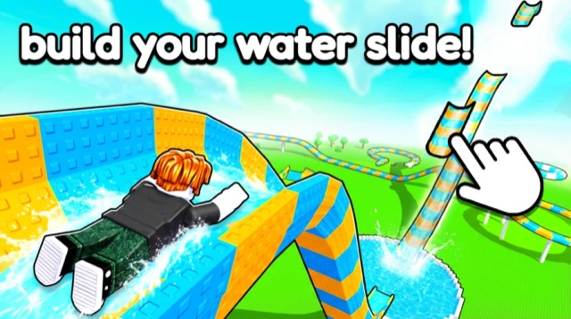
Game
Nov 2025
My Waterslide
Formerly Build a Water Slide · with Devextra
Project manager
Shipped in seven days in partnership with Devextra. Peaked at 20,000 concurrent players and hit a $60K USD valuation shortly after release.
I managed the partnership with Devextra, staffed and ran the team through the seven-day build, led testing, and handled the launch and live operations afterwards.
- 20K peak players
- $60K valuation
- Devextra
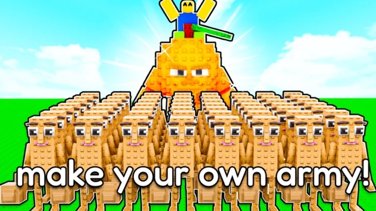
Game
Aug 2025
Brainrot Wars!
Roblox game
Project manager
Peaked at 3,300 concurrent players.
I ran the team, decided the scope with the founder, led playtesting and bug triage, and managed the launch and the updates after release.
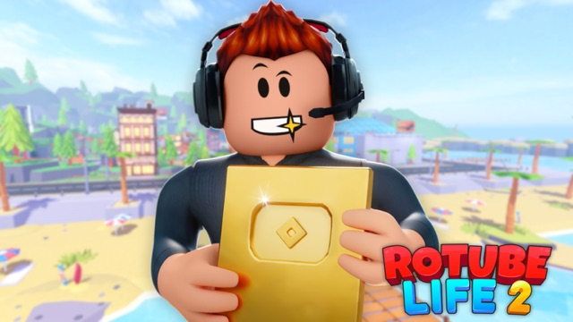
Game
Mar 2025
RoTube Life 2!
The sequel to RoTube Life
Project manager
46M+ plays and 152K favourites.
I ran production on the sequel, staffed the roles the project needed, led testing, and managed the launch and the live-operations cadence after it.
- 46M+ plays
- 152K favourites
2024
June 19Community
June 2024
Volunteer & vendor manager · Foss Park, North Chicago
A community celebration with music, food, and local vendors, organised by the Greater Waukegan Development Coalition. I organised where volunteers needed to go and directed them there, and I helped vendors get settled with what they needed to operate.
- Volunteers + vendors
- Reference on request
2023
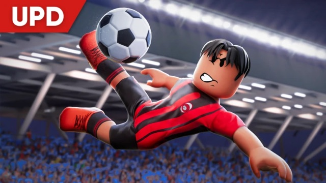
Game
Sep 2023 – Jan 2024
Fast-paced football on Roblox, now FIFA Super Soccer
Project manager · Playverse
Playverse’s realistic football game with simple controls. 116M+ plays; the studio reports a 40,000 peak in simultaneous players.
I ran the project with Playverse’s team, made product and priority calls with the studio, staffed roles as needed, led testing, and managed the game’s brand, social channels, and partnerships through launch and live operations.
- 116M+ plays
- 40K peak players
2022
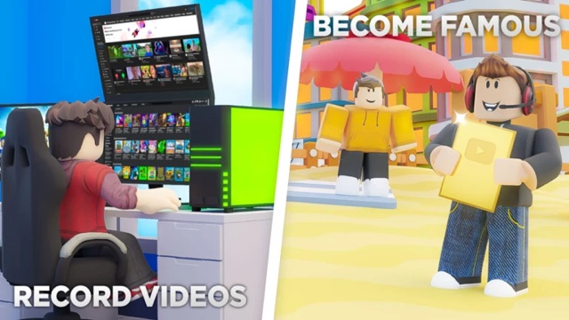
Game
Feb 2022
RoTube Life
Roblox Top 50 at release
Project manager
Climbed to the Roblox Top 50 at release with a peak of 50,000 concurrent players. Lifetime: 236M+ sessions and over $1M USD grossed.
I ran the three-person team day to day, worked with the founders on product direction, led testing, and managed the launch and the live updates as the game climbed the Top 50.
- 236M+ plays
- 50K peak players
- >$1M grossed
Activities summary · PDF ↗Figures on my own entries come from screenshots and reports I shared. Figures on managed projects are the team’s results, as the projects report them. Each entry says what my part was.